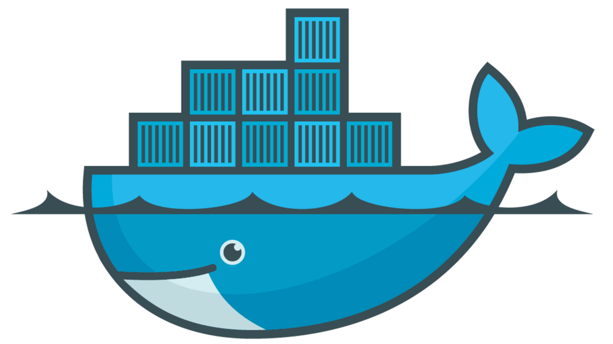

1. 安装Docker 1.1. 一键安装Docker Manjaro系统下pacman命令一键安装Docker
1.2. 配置镜像加速器 国内从 Docker Hub 拉取镜像有时会遇到困难，此时可以配置镜像加速器。Docker 官方和国内很多云服务商都提供了国内加速器服务，例如:
1.2.1. 新建 /etc/docker/daemon.json 文件 1 2 sudo touch /etc/docker/daemon.json sudo vim /etc/docker/daemon.json
1.2.2. 在文件中添加如下命令 文件位置：/etc/docker/daemon.json 1 2 3 4 5 { "registry-mirrors": [ "https://registry.docker-cn.com" ] }
1.2.3. 重新启动服务 1 2 sudo systemctl daemon-reload sudo systemctl restart docker
1.2.4. 检查加速器是否生效 若最后有如下信息，则国内镜像服务（加速器）已生效
1 2 Registry Mirrors: https://registry.docker-cn.com/
2. Docker简单应用 2.1. 运行hello-word小例子 1 sudo docker run hello-world
运行hello-world容器，尽管此时没有hello-world镜像，docker会自动拉取hello-world的镜像，然后运行hello-world容器。
2.2. 获取镜像 在 Docker Store 上有非常多的高质量的官方镜像
2.2.1. 拉取Python镜像 1 sudo docker pull python:3.5
2.2.2. 拉取Ubuntu16.04镜像 1 sudo docker pull ubuntu:16.04
2.2.3. 列出已经下载下来的镜像 2.2.4. 删除镜像 1 sudo docker image rm [镜像名/镜像ID]
3. 使用python镜像 3.1. 准备工作 在宿主操作系统～目录下新建文件夹
1 2 mkdir -p DockerTest/Pythonapp touch helloworld.py
helloworld.py 文件，代码如下：
文件位置：~/DockerTest/Pythonapp/helloworld.py 1 2 3 4 5 #!/usr/bin/python for i in range(5): print(i， ' hello world!')
3.2. 运行容器 跳转到上一目录~/DockerTest，并执行以下命令运行容器
1 2 3 4 5 6 7 sudo docker run -v $PWD /Pythonapp:/usr/src/Pythonapp -w /usr/src/Pythonapp python:3.5 python helloworld.py -v $PWD /Pythonapp:/usr/src/Pythonapp -w /usr/src/Pythonapp python helloworld.py
执行结果如下：
1 2 3 4 5 0 hello world!1 hello world!2 hello world!3 hello world!4 hello world!
4. 使用Ubuntu16.04镜像 4.1. 容器与宿主机对比 1 2 3 4 5 6 7 8 sudo docker run -t -i ubuntu:16.04 /bin/bash pwd uname -r ps a | grep docker
左图 为Docker运行的Ubuntu16.04容器； 右图 为宿主操作系统
分析 ：执行pwd (#显示当前目录)命令 时可看到容器的当前目录为/，而非运行容器的宿主目录~；均跳转到根目录/后运行ls命令可看到容器与宿主操作系统有两套不同的文件系统。正如前面介绍的那样，Docker会虚拟一整套文件系统。
分析 ：两边执行uname -r 命令 ，两边内核版本一致，正如前面介绍的那样，Docker无模拟硬件，无内核。
4.2. 创建一个Ubuntu16.04容器并在内运行bash小程序 小程序功能：每隔一秒输出一次hello world
1 sudo docker run ubuntu:16.04 /bin/sh -c "while true; do echo hello world; sleep 1; done"
4.3. 显示当前容器 1 2 docker container ls sudo docker container ls -a
4.4. 清理所有处于终止状态的容器 1 sudo docker container prune
5. Docker镜像、容器常用命令 5.1. 每次启动docker 重新启动服务 1 2 sudo systemctl daemon-reload sudo systemctl restart docker
##（容器对比）linux命令：
5.2. 从 Docker 镜像仓库获取镜像： 1 sudo docker pull ubuntu:16.04
5.3. 列出本地镜像 5.4. 删除本地镜像 1 sudo docker image rm [选项] <镜像1> [<镜像2> ...]
6. 容器 常用命令 6.1. 显示当前容器 1 2 sudo docker container ls sudo docker container ls -a
6.2. 新建并启动 1 sudo docker run -t -i ubuntu:16.04 /bin/bash
6.3. 后台运行容器 -d 参数： 1 2 3 4 sudo docker run -d ubuntu:16.04 /bin/sh -c "while true; do echo hello world; sleep 1; done" sudo docker run ubuntu:16.04 /bin/sh -c "while true; do echo hello world; sleep 1; done"
6.4. 终止容器 1 sudo docker container stop [容器名/容器ID]
例如对于上面中只启动了一个ubuntu:16.04终端的容器，用户通过 exit 命令或Ctrl+d 来退出终端时，所创建的容器立刻终止。
6.5. 删除容器 1 2 3 sudo docker container rm [容器名/容器ID] sudo docker container rm -f [容器名/容器ID] sudo docker container prune
6.6. 进入容器 在使用 -d 参数时，容器启动后会进入后台。
1 2 3 4 5 6 7 sudo docker attach [容器名/容器ID] sudo docker exec -it [容器名/容器ID] bash sudo docker run -d ubuntu:16.04 sudo docker container ls -a sudo docker exec -it [容器名/容器ID] bash
6.7. 导出和导入容器 6.7.1. 导出容器 如果要导出本地某个容器，可以使用 docker export 命令，将导出容器快照到本地文件。
1 2 sudo docker container ls -a sudo docker export [容器名/容器ID] > FileName.tar
6.7.2. 导入容器快照 可以使用 docker import 从容器快照文件中再导入为镜像，例如
1 2 sudo cat FileName.tar | docker import - test /FileName:v1.0 sudo docker image ls
7. Docker工作中常用高阶用法 7.1. 重载 docker daemon 配置而保持 container running 的方法 1 2 3 4 Docker 支持这个“live-restore”功能，https://docs.docker.com/config/containers/live-restore/。 用法： daemon.json 中配置 "live-restore": true 然后执行： systemctl reload docker
7.2. 时差 8 小时 解决方式 1：直接拷贝 HOST
1 2 3 CONTAINER_NAME='ansible' docker cp /usr/share/zoneinfo $CONTAINER_NAME:/usr/share/ docker cp /etc/localtime $CONTAINER_NAME:/etc/
解决方式 2：创建容器时挂载宿主
1 2 3 4 5 CONTAINER_NAME='ansible' docker run -dit --name $CONTAINER_NAME --net=host \ -v /usr/share/zoneinfo:/usr/share/zoneinfo \ -v /etc/localtime:/etc/localtime \ <docker_image>
7.3. 导出镜像到文件 1 2 3 4 5 6 7 8 9 10 11 12 13 14 # 查看镜像 docker image list # 导出镜像到 tar 文件 # docker save -o jihaix-sonic-dev-v1.1.3.tar <IMAGE ID> docker save -o jihaix-sonic-dev-v1.1.3.tar e6249ced1016 # 导入 image 文件到 Docker docker load -i jihaix-sonic-dev-v1.1.3.tar # 为导入的镜像添加标签 docker tag 066d3e7d2396 jmeter-slave:jmeter-slave docker tag c5c8334a1c3a ubuntu:tbsvr_v2 docker tag ef545a8be92f fpga_agent_img:8.0_debug_rte_ring
7.4. tag 更名 1 2 3 4 5 # create a new tag ( has same image-id ) docker tag old-image-name:old-tag new-image-name:new-tag # delete old tag ( Note: not image-id ) docker rmi old-image-name:old-tag
7.5. 将容器保存为新的镜像 1 2 3 4 # docker commit (-a="Author" -m "Commit message" ) <container_name/ID> <save_images_name> docker commit tbsvr_v2 ubuntu:tbsvr_v2.0.1 docker commit -a="Author" -m "Commit message" c9a2f98234c7 tomcat04:1.0 docker commit 581b4b5682dd sde-build-image:v9.9.0
7.6. 推送镜像至内网 images registry 1 2 3 4 5 6 7 8 9 10 11 12 13 14 15 16 17 18 19 20 21 22 23 24 # 拉取原始镜像 docker pull arm64v8/golang:1.20.5-buster # 重命名 images name 至命名空间 docker tag 15f4e972a5df self-arm64v8/golang:1.20.5-buster # 删除原 tag # docker rmi golang:1.17-stretch # 用服务账号登录内网私有厂库 docker login A.B.C.org # check cat ~/.docker/config.json # 上传镜像至内网 images registry docker push self-arm64v8/golang:1.20.5-buster # 退出登录内网私有厂库 docker logout A.B.C.org # check cat ~/.docker/config.json
7.7. 查看 docker 退出原因 1 2 # docker logs -f -t --since="2022-08-12" --tail=20 docker_container_name docker logs -f -t --since="2022-08-12" --tail=20 ansible
7.8. 清理容器日志 1 sudo truncate -s 0 $(docker inspect syncd -f {{.LogPath}} patrol_pktinjector)
7.9. 限制容器占用内存大小 1 2 3 4 # 法1: 创建容器参数 在 docker run 阶段加 '-m 1g' 参数 # 法2: cgroup 系统级策略 创建新 cgroup 并设置内存限制，docker 守护进程启动时指定这个 cgroup 以限制全局所有容器内存
7.10. 运行镜像，生成容器 1 2 3 4 5 6 7 8 9 10 11 12 13 docker run -d -it --name CONTAINER_NAME --net=host jihaix/sonic-dev:v1.1.3 docker run -d -it --name tacplus_server_20220301 --net=host jihaix/sonic-dev:v1.1.3 docker run -d -it --name tacplus_server_20220301 --net=host jihaix/sonic-dev:v1.1.3 docker run -dit --name tbsvr_v2 --network host --privileged \ -v /data00/var-lib-docker/tbsvr_v2/docker:/var/lib/docker ubuntu:tbsvr_v2 docker run -dit --name tbsvr_v2.0.2 --network host --privileged \ -v /data00/var-lib-docker/tbsvr_v2/docker:/var/lib/docker \ -v /data00/var-lib-docker/tbsvr_v2/veos-vm/disks:/home/sonic/veos-vm/disks \ ubuntu:tbsvr_v2.0.1
7.10.1. 选择运行容器的网络方式
Docker 容器的四种网络方式
host 网络： 与宿主机共用一个网络空间
bridge 桥接网络（默认）： n 个桥接网络 < == > (docker 0) < == > 宿主机（网桥/iptables net 表）
container 共享： 与某已创建容器共享网卡、IP 等
none： 无网络
1 2 3 4 docker run ... --network='host' docker run ... --network='bridge' docker run ... --network='container:<name|id>' docker run ... --network='none'
7.11. 查看 Docker 容器启动时间（eg. database 容器） 1 date -d @$(date -d $(docker inspect --format='{{.Created}}' database) +%s) +"%Y-%m-%d %H:%M:%S.%N"
7.12. 查看容器版本信息 1 docker inspect -f '{{json .Config.Labels.Tag}}' database
7.13. 查看容器某项 详细信息 1 2 docker inspect -f '{{json .HostConfig.Binds}}' snmp | jq docker inspect -f '{{json .NetworkSettings.Networks}}' snmp | jq
7.14. 各个 container 容器执行相同命令 1 2 # 如：查看各容器时间 docker ps -a | tail -n +2 | awk '{ print $NF}' | xargs -I {} docker exec {} date
7.15. 遍历各容器查找文件 1 2 3 4 5 6 7 8 9 10 11 12 FIND_FILE='psud' echo telemetry; docker exec -it telemetry find / -name $FIND_FILE 2>&1 | fgrep -v 'find:' echo snmp; docker exec -it snmp find / -name $FIND_FILE 2>&1 | fgrep -v 'find:' echo lldp; docker exec -it lldp find / -name $FIND_FILE 2>&1 | fgrep -v 'find:' echo dhcp_relay; docker exec -it dhcp_relay find / -name $FIND_FILE 2>&1 | fgrep -v 'find:' echo radv; docker exec -it radv find / -name $FIND_FILE 2>&1 | fgrep -v 'find:' echo syncd; docker exec -it syncd find / -name $FIND_FILE 2>&1 | fgrep -v 'find:' echo teamd; docker exec -it teamd find / -name $FIND_FILE 2>&1 | fgrep -v 'find:' echo swss; docker exec -it swss find / -name $FIND_FILE 2>&1 | fgrep -v 'find:' echo bgp; docker exec -it bgp find / -name $FIND_FILE 2>&1 | fgrep -v 'find:' echo pmon; docker exec -it pmon find / -name $FIND_FILE 2>&1 | fgrep -v 'find:' echo database; docker exec -it database find / -name $FIND_FILE 2>&1 | fgrep -v 'find:'